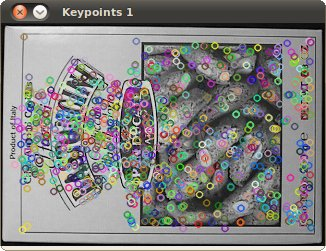

feature2d module. 2D Features framework¶
Learn about how to use the feature points detectors, descriptors and matching framework found inside OpenCV.
Title: Harris corner detector
Compatibility: > OpenCV 2.0
Author: Ana Huamán
Why is it a good idea to track corners? We learn to use the Harris method to detect corners
Title: Shi-Tomasi corner detector
Compatibility: > OpenCV 2.0
Author: Ana Huamán
Where we use an improved method to detect corners more accuratelyI
Title: Creating yor own corner detector
Compatibility: > OpenCV 2.0
Author: Ana Huamán
Here you will learn how to use OpenCV functions to make your personalized corner detector!
Title: Detecting corners location in subpixeles
Compatibility: > OpenCV 2.0
Author: Ana Huamán
Is pixel resolution enough? Here we learn a simple method to improve our accuracy.
 Title: Feature Detection
Compatibility: > OpenCV 2.0
Author: Ana Huamán
In this tutorial, you will use features2d to detect interest points.

Title: Feature Description
Compatibility: > OpenCV 2.0
Author: Ana Huamán
In this tutorial, you will use features2d to calculate feature vectors.

Title: Feature Matching with FLANN
Compatibility: > OpenCV 2.0
Author: Ana Huamán
In this tutorial, you will use the FLANN library to make a fast matching.
Title: Features2D + Homography to find a known object
Compatibility: > OpenCV 2.0
Author: Ana Huamán
In this tutorial, you will use features2d and calib3d to detect an object in a scene.
Title: Detection of planar objects
Compatibility: > OpenCV 2.0
Author: Victor Eruhimov
You will use features2d and calib3d modules for detecting known planar objects in scenes.
{kind=link}
{kind=link}
{kind=link}
{kind=link}
{kind=link}
{kind=link}
{kind=link}
Help and Feedback
You did not find what you were looking for?- Ask a question on the Q&A forum.
- If you think something is missing or wrong in the documentation, please file a bug report.